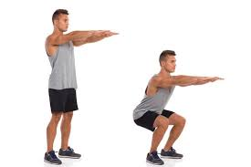
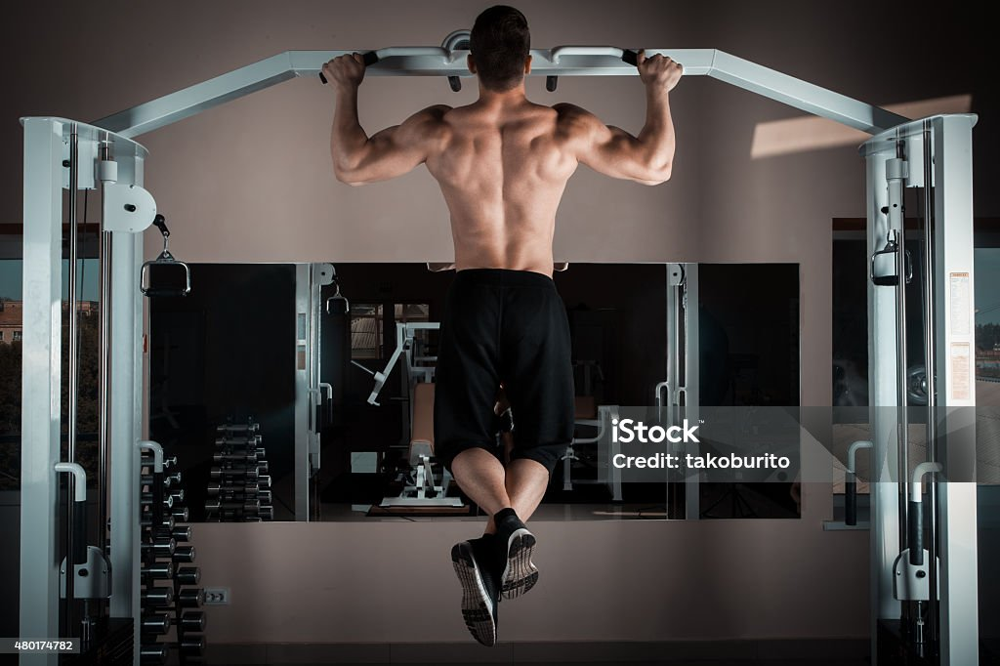

Include exercises like bench press, deadlifts, squats, and pull-ups.
1.bench press

Muscles worked by a bench press
Bench presses work several different muscles in your upper body, including the chest, shoulders, and arms. Although the muscles worked may vary slightly depending on the specific variation that you perform, bench presses can target the following muscles: pectoralis major anterior deltoid triceps brachii biceps brachii serratus anterior
2. deadlifts

The top 8 benefits of deadlifts
Here are 8 evidence-based benefits of incorporating deadlifts into your training program
1. Activate your hip extensors
Deadlifts are among the best exercises for training your hip extensors. Your hip extensors include the gluteus maximus and hamstring complex, which are commonly targeted muscles in fitness programs due to their functional use and aesthetic appeal when properly trained. Research suggests that deadlifts are superior to squats when it comes to training these muscles. Still, squats offer different benefits than deadlifts and are also an important component of well-rounded fitness programs (1, 2). The activation of the gluteus maximus and hamstrings when performing deadlifts will lead to both increased strength and size of these muscles.
2. Reduce lower back pain
ower back pain is an incredibly common complaint among the general population. While there are many causes of lower back pain that require differing treatments, research suggests that for mild mechanical low back pain, deadlifts can be an effective tool for reducing or reversing this ailment (3).
3. Improve jump performance
umping is a key skill for a variety of athletic and recreational activities, and your jumping ability often reflects the overall development of your lower body power. Plus, the increased power reflected in the ability to jump transfers to other maximal power activities like sprinting.
4. Improve bone mineral density
Loss of bone mineral density is a common effect of aging and a major health issue facing older adults. Advanced loss of bone mineral density results in osteoporosis, which greatly increases the risk of fractures among older adults. Fractures can lead to a cascade of ongoing physical health problems related to loss of mobility.
Activate your core
Training your trunk muscles and core is a key aspect of well-rounded fitness programs.
6. Boost your metabolism
Weight loss is a common goal of many fitness programs. Successfully losing weight, particularly via losing body fat, requires you to burn more calories than you consume in a given period of time. Traditional weight loss programs combine dietary modifications to reduce calorie intake and physical activity to increase calorie burning.
7.Carry less risk during failed repetitions
The previously mentioned benefits are based on scientific research. Yet, there are some subjective benefits of deadlifts that make them an effective exercise in practice.
8. Offer simplicity of equipment
The final subjective benefit of deadlifts is the relative simplicity of the equipment. All you need is a barbell and some plates, or a weighted object with a handle, such as a kettlebell, to perform the movement.
squats

7 Benefits of Doing Squats
When performed correctly, squats are a functional exercise that can boost your calorie burn, help prevent injuries, strengthen your core, and improve your balance and posture.
1. Strengthens your core
Having strong core muscles can make everyday movements like turning, bending, and even standing easier. Not only that, but a strong core can improve your balance, ease pain in your low back, and also make it easier to maintain good posture.
2. Reduces the risk of injury
When you strengthen the muscles in your lower body, you’re better able to execute full-body movements with correct form, balance, mobility, and posture.
3. Crushes calories
Calorie burning is often equated with aerobic exercises such as running or cycling. But performing high-intensity, compound movements like the squat can also crush some serious calories.
4. Strengthens the muscles of your lower body
Your lower body boasts some of your largest and most powerful muscles. From getting out of bed, to sitting down in a chair, your glutes, quadriceps, hamstrings, adductors, hip flexors, and calves are responsible for almost every move you make.
5. Boosts athletic ability and strength
If you compete in a sport, adding jump squats to your workout may help you develop explosive strength and speed which, in turn, may help improve your athletic performance.
6. Variety helps with motivation
Once you master the basic squat, there are many different types of squat variations you can try. Changing up your squats can help keep the exercise interesting, while also activating different muscle groups.
7. Can be done anywhere
To do bodyweight squats, you don’t need any equipment. All you need is your body and enough room to lower your hips into a sitting position.
pull-ups
7 Benefits of Pull-Ups to Maximize Your Strength-Training Routine
Pull-ups are more than just a challenging exercise. They're a gateway to a stronger, fitter upper body. Whether you're a seasoned gym-goer or a beginner, incorporating pull-ups into your strength-training routine can yield a host of benefits.
1. Pull-ups strengthen upper body
1.Back: Pull-ups are a great way to strengthen back muscles 2.Arms: Your arms, especially the biceps, get a good workout as you lift and lower your body during each pull-up repetition. 3.Shoulders: Pull-ups activate shoulder muscles, particularly the deltoids.
2. Pull-ups increase grip strength
You use an overhand grip to hold a bar during pull-ups, which can improve your hand grip strength.
3. Pull-ups build muscle mass
If you want to build muscle, the pull-up is your friend.
4. Pull-ups change body composition
strength-training exercises like pull-ups can do wonders for your body composition
5. Pull-ups support strong bones
Research shows that bone density peaks around age 30 and then naturally starts to decline. So maintaining strong bones is increasingly important as you age
Cardiovascular Exercises
Engage in activities such as running, cycling, or using elliptical machines.
Flexibility and Stretching
Stretching exercises like yoga or Pilates to improve flexibility and prevent injuries.